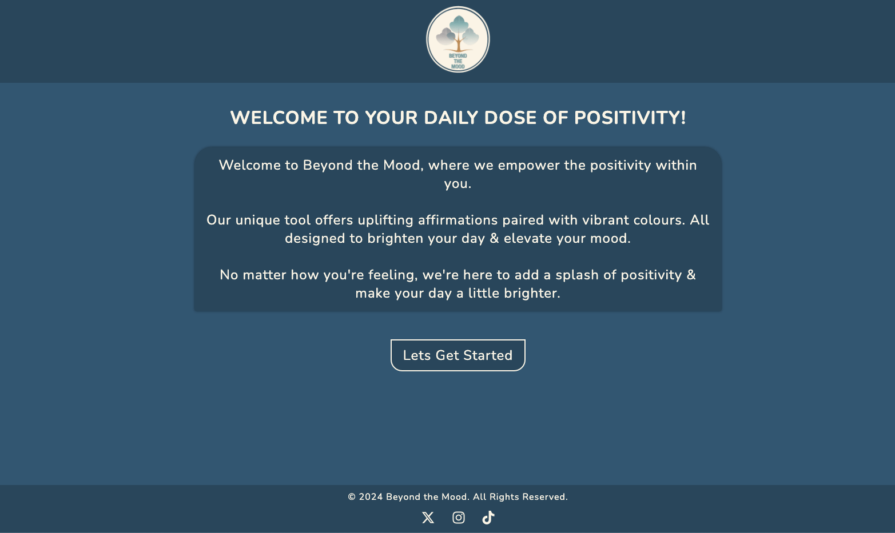
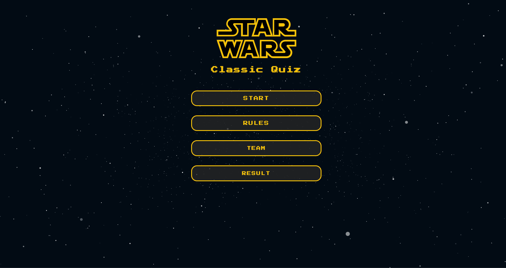

Fairyland Cottage
This website was built for a YouTube channel that has over 350,000 followers. The channel is for Natural, Simple, Sustainable Living.

I'm Terry, a web developer.
GitHubI create eye-catching websites with intuitive user experiences
Hello! I'm Terry, a web developer with a passion for creating engaging
digital experiences.
With over 15 years in video production across diverse platforms, my
journey from director and editor to web developer is fueled by
creativity and technical expertise. Based near Ashford Studios in
Wicklow, Ireland, I've honed my skills in crafting compelling
narratives and seamless visual experiences.
Transitioning into software development, I bring dedication, attention
to detail, and a collaborative spirit. Eager to contribute to
innovative projects, I aim to offer fresh perspectives and creative
insights to development teams.
As a Junior Web Developer with a solid foundation in HTML, CSS, and
JavaScript, I am currently pursuing a Full Stack Development diploma
at Code Institute. I specialize in Frontend Web Development, where I
excel in creating eye-catching websites with intuitive user
experiences.
This website was built for a YouTube channel that has over 350,000 followers. The channel is for Natural, Simple, Sustainable Living.
This Positive Affirmation and Colour Wheel app is designed to uplift your mood and bring positivity into your day.

This web-based game tests your knowledge of the Star Wars universe through a series of challenging and entertaining questions.
